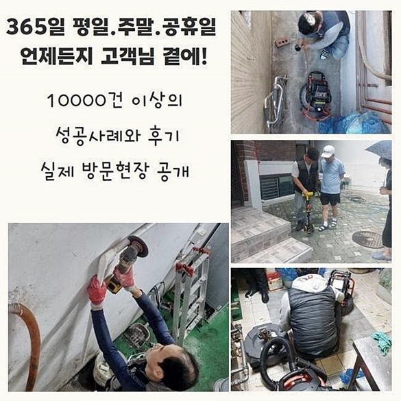
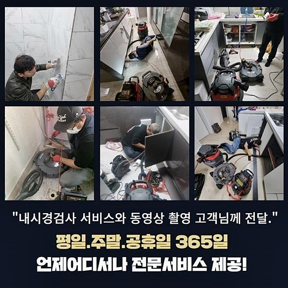
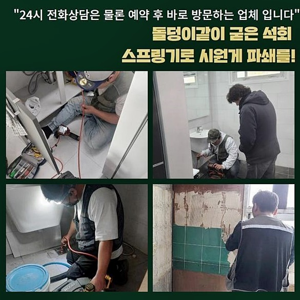
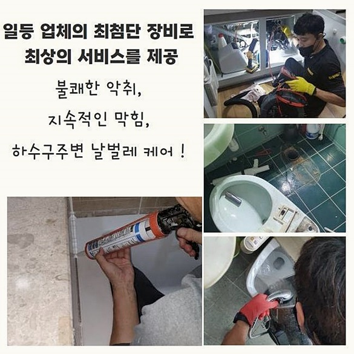
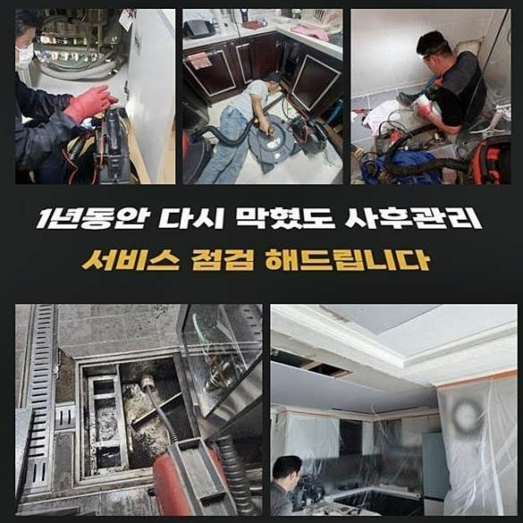
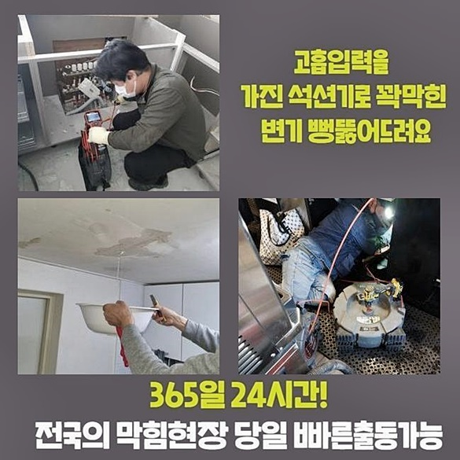

🏠 중랑구 면목동하수도막힘 면목본동 하수구청소 통수전문
용인 목동 하수구막힘 전문 시공 후기

📋 작업 개요
- 위치: 용인 목동, 목동, 용인
- 서비스 유형: 하수구막힘, 배관막힘, 역류해결, 뚫는업체, 배관청소, 고압세척
- 작업 일시: 2024. 9. 6. 15:12
- 업체명: 하수구수사대 (010-5615-2118)
🔍 문제 상황
중랑구 면목동하수도막힘 면목본동 하수구청소 통수전문
이물들을 상당량 빠지게하는 요식업의 경우에는 때때로 배수장애를 마주합니다
자연스럽게 식자재를 취급하며 잔해가 하수관으로 흐르게되며 그것때문에 배수구들이 곤경에 처하고 생활에 쓰이는 용품들을 사용한 뒤 뚫리기도하나 재차 막히게 될지 몰라요
전문적인 전문인에게 전화해도 주방의 일들을 멈춰야하기에 마냥 쉬울수만은 없는데요
전문적이지 못한 방식으로 한시적으로나마 뚫는다고 하여도 언제 그랬냐는 듯 또 발생되니 추천하기론 전문적인 방법으로 확실히 수리해주는게 좋은데요
곧바로 주방의 배수구로 수도가 빠지질 않아 영업자체를 못한다고 다급한 목소리로 연락주셨어요
신속히 내방드려서 문제양상을 확인해주었어요
역류증상도 나타나면서 물이 안빠지는것을 넘어 잔해물들도 고여있던 상황이였죠
배수관에 고착되는 문제가 도래했다는 의미라고 볼 수 있죠 무슨 원인인지 체크를 해보아야 문제들을 빠르게 시정할 수 있답니다
배수관으로 내시경장비를 투입시켜서 안이 어떻게 이뤄져있고 어느지점에 막히는 양상이 심해진것인지 살폈습니다
케이블이 얇기에 관로에 이하수가 쌓이게 된 가는 관로에있어서 활용되죠 들여다보았더니 꺾여지는 부위도 보여졌어요
구부러진 배관이여도 이리저리 휘기에 직각으로 엘보부분도 세심히 확인가능해요

🔎 원인 분석
💡 전문가 진단: 정밀 진단 장비를 사용하여 슬러지의 고착 여부를 판명하고 타격/세척 작업을 실시했습니다.
조리시설에서 이용하던 배수관이라 입구부터 기름성분들과 이물질의 뭉텅이로 오염된 모습이였죠
깊은곳까지 살펴보았더니 높은 수압의 세척들이 필요했는데요
고객께서 질문을 해주시는 작업인 고압세척의 경우 저희업체가 저희도 빠르게서 찾아가서 증상을 관찰해보고 점검하고서 안내하니 동의없이 고압수청소를 이어가는 무모함은 없을것이라 설명드릴게요!
공동관로도 막혀버린게 파악되어서 탐지기기를 써본 후에 어느 배수설비가 말썽인건지 살폈는데요
배수관으로 내시경을 투입한 다음 탐지도구를 가용해요
이 기계를 운용하여 막혀버린 지점을 인지하게 됩니다
조금의 거리들이 존재해도 삽입한 라인들을 통하여 길이들을 파악했죠
반대로 집수시설까지는 더욱 복잡하기에 관로탐지장치들을 써서 알맞은 위치들을 특정시키는건데요
막혀버린 지점을 관찰해보니 바깥부터 심층부까지 문제들이 뻗은걸 인지했습니다
지금까지 하수 시스템 오류가 생겨나며 문제들을 발현시킨 이유들은 외부 배수로가 배수되지를 못해서였죠
기름뭉치가 진흙과같이 흘러나왔어요
기름성분을 많이 이용되는 조리공간이기때문에 일반적인 가정과 대조해보아도 비교할 수 없을정도로 대량의 기름때들을 체크해보았습니다
지속적으로 조리과정을 거치고 그릇을 세척하면 배수구로 잔해물이 배출되는것은 당연하다고 볼 수 있어요

🔧 작업 과정
막히는 양상이 발현되었을 때 이전에 조치들을 실행해준다면 장기간 사용가능해요
배수과정이 예사롭지않다면 지속적으로 관리해주셔야해요
더군다나 다양한 식자재를 많이 쓰이는 음식점일수록 끓고있는 수도를 배수구로 흐르게하여 기름들을 청소하고자하나 권장하는 방식은 아닌데요
일차적으로 배수구의 기름들을 청소해준 뒤 내부부터 본격적으로 청소를 실시했습니다
이에 속하는 과정으로는 샤프트도구로 하수구로 선을 투입시켜 노커가 회전하며 흡착된 오염물을 빠르게 탈락시켜줘요
벽측에 잔존하는 것들도 체인들에 엉키며 배출되게됩니다 높은 수압을 견딜 수 없을만큼 내식성이 저하되었다면 샤프트장비기를 사용해 이와 비슷한 결과들을 양산시킬 수 있어요
안에와 더불어 외부의 설비에서도 증세가 발생된 상황으로 동시다발적인 이물제거가 행해져야했죠
바깥에서 안까지 샤프트장비 사용을 진행해준다면 벽면에 이오수가 순서대로 없어지면서 물길이 열리게 되요
배수관으로 이하수가 상당했던 탓에 지속적으로 샤프트장치 체인으로 기름성분을 제거했답니다
지금까지 하수도를 이용해주면서 악취들이 심했다고 말씀해주셨습니다 작업이 끝난다면 냄새들이 발생되는 상황은 걱정하지 않으셔도 됩니다
외부 하수관으로는 크기들도 크며 지속적으로 관리적 측면의 부재로 고착된 슬러지가 많았습니다
곧장 뜰망을 써서 이물들을 거르면서 작업했죠
슬러지들이 없어지면서 통수가 제대로 갖춰지며 그다음으로 행해지는 청소가 훨씬 조속히 진행되죠 집수라인은 일반적으로 하수관에서 흐르게된 오수가 이곳에 잔존해있다가 빠지게되죠
곧장 배관 가운데 한곳이라도 막혀버리게 될 시 타 부위도 심각하게 막혀버리는거에요
작업 시 샤프트도구와 내시경을 삽입하여 관찰을 통한 세척합니다
내시경장치를 통해서 내측을 주시해주면서 놓치고있는 부분들이 있는지 인지하기 쉬운데요
하수관으로부터 밖으로 이어져있는 하수관을 전부 손봐줘요 관로탐지장치들을 통해서 빠트린 라인 없이 검토해 샤프트도구 운용을 이행했어요
꼼꼼한 점검 덕에 잔해물들을 전부 청소하여 빠르게 이물을 청소해줄 수 있었어요
하수도로 공동관로도 매립된 모습이 길기때문에 동시다발적인 기기들을 투입시켜 접촉부까지 세척을 속행했죠
내측에도 이물이 있진않은지 내시경기기로 관찰을 이어갔어요 내시경으로 점검 결과 언제 그랬냐는 듯 이물하나없는 하수라인을 확인했습니다


✅ 작업 완료
끝으로 하수라인으로 하수들이 흐르게되는지 확인합니다
배수체크를 진행시키니 하수관으로 막힘없이 빠졌죠 식당으로부터는 잔해물이나 식재료의 잔해로 배수구들이 막히게 됩니다
배수구로 원인을 제대로 제거시키고 거름망부품을 잘 놔주시고 이용하면서 수도를 배출시키는 시점에도 각별히 유의하시면 좋아요
이와 더불어 때때로 점검을 거치면 배수설비가 이상을 보이지않고 사용가능합니다
배수관으로 이상이 발생했을 시 언제라도 저희를 찾아주세요



⚠️ 하수구 배관 막힘 예방 및 관리 가이드
- ✅ 머리카락, 비닐, 물티슈 등 물에 분해되지 않는 이물질은 하수구 유입을 절대 금지해 주세요.
- ✅ 하수구 거름망을 씌우고 모여진 이물질은 주기적으로 쓰레기통에 바로 비워주셔야 합니다.
- ✅ 배관 노후가 심할 경우 이물질이 더 쉽게 걸리므로 주기적인 배관 세척(고압세척 등)을 권장합니다.
- ✅ 작업 후 1년 이내 재발 시 하수구수사대에서 무상 A/S 보증 서비스를 제공합니다.
💡 핵심 정리
- 확실한 장비 작업(내시경 점검 및 샤프트 스케일링)으로 원인을 뿌리 뽑습니다.
- 작업 후 1년 이내에 동일한 부위 재발 시 100% 무상 A/S 서비스를 보장합니다.
- 서울 · 경기 · 인천 전 지역에 24시간 언제든 긴급 출동할 수 있도록 항시 대기 중입니다.
❓ 자주 묻는 질문 (FAQ)
🚨 용인 목동 하수구막힘 문제로 고민이신가요?
정확한 원인 진단과 확실한 시공으로 재발 없는 해결을 약속드립니다.
24시간 긴급 출동 | 서울 · 경기 · 인천 전지역 | 1년 내 재발 시 무상 A/S